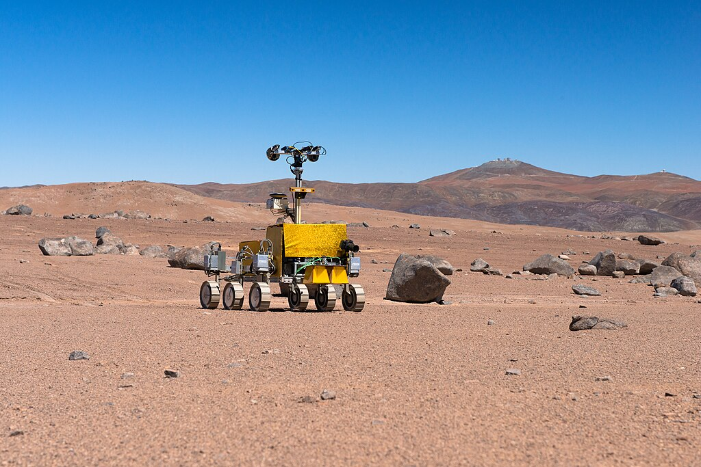

49th ICPC World Championship · Problem D

The International Center for Planetary Cartography (ICPC) uses rovers to explore the surfaces of other planets. As we all know, other planets are flat surfaces which can be perfectly and evenly discretized into a rectangular grid structure. Each cell in this grid is either flat and can be explored by the rover, or rocky and cannot. Today marks the launch of their brand-new Hornet rover. The rover is set to explore the planet using a simple algorithm. Internally, the rover maintains a direction ordering, a permutation of the directions north, east, south, and west. When the rover makes a move, it goes through its direction ordering, chooses the first direction that does not move it off the face of the planet or onto an impassable rock, and makes one step in that direction.
Between two consecutive moves, the rover may be hit by a cosmic ray, replacing its direction ordering with a different one. ICPC scientists have a log of the rover’s moves, but it is difficult to determine by hand if and when the rover’s direction ordering changed. Given the moves that the rover has made, what is the smallest number of times that it could have been hit by cosmic rays?
The first line of input contains two integers r and c, where r (1 ≤ r ≤ 200) is the number of rows on the planet, and c (1 ≤ c ≤ 200) is the number of columns. The rows run north to south, while the columns run west to east.
The next r lines each contain c characters, representing the layout of the planet. Each character is either ‘#’, a rocky space; ‘.’, a flat space; or ‘S’, a flat space that marks the starting position of the rover. There is exactly one ‘S’ in the grid.
The following line contains a string s, where each character of s is ‘N’, ‘E’, ‘S’, or ‘W’, representing the sequence of the moves performed by the rover. The string s contains between 1 and 10 000 characters, inclusive. All of the moves lead to flat spaces.
Output the minimum number of times the rover’s direction ordering could have changed to be consistent with the moves it made.
5 3 #.. ... ... ... .S. NNEN
1
Explanation of Sample 1: The rover’s direction ordering could be as follows. In the first move, it either prefers to go north, or it prefers to go south and then north. Note that in the latter case, it cannot move south as it would fall from the face of the planet. In the second move, it must prefer to go north. In the third move, it must prefer to go east. In the fourth move, it can either prefer to go north, or east and then north. It is therefore possible that it was hit by exactly one cosmic ray between the second and third move, changing its direction ordering from N??? to EN?? where ‘?’ stands for any remaining direction.
3 5 .###. ....# .S... NEESNS
0
Explanation of Sample 2: It is possible the rover began with the direction ordering NESW, which is consistent with all moves it makes.
3 3 ... ... S#. NEESNNWWSENESS
4